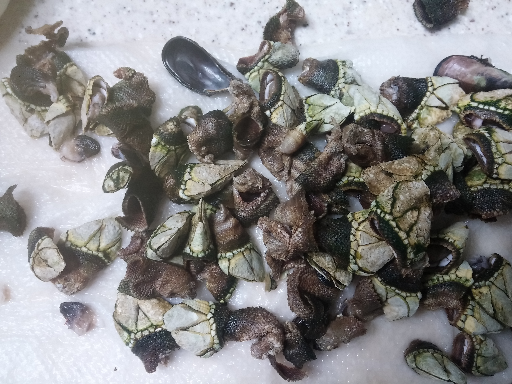

난 조직문화를 싫어한다. 조직문화를 싫어하는 이유는 사회적 강자(조직의
실권자)의 사고방식이 개개인에게 영향을 주기때문이다. 작은 기업에서
조직문화라는 것은 절대자의 심리공간에 불과하다. 이런 공간에서 개개인은
생각할 여력이 없다. 정보도 통제되고 경제권도 절대자에 있기
때문이다. 그래서 믿음이 생겨난다. 절대자의 생각이 곧 나의 생각이
된다. 세뇌가 되는 것이다. 사이비 종교와 다름 없다. 제주도의 몇몇
업체를 다닌 적이 있다. 작은 업체들이였다. 이 업체들은 전형적인
조직문화를 갖는 기업들이였다. 보편적 상식은 통하지 않는다. 예를 들어,
4월 보궐선거에 누구를 찍으라는 지시사항이 내려올 정도다. 그리고
사람들은 아무런 불만없이 지시사항을 따른다. 이런 기업에서 건전한
토론과 상식적 판단을 하기란 어렵다. 절대자가 지배하는 심리적 공간을
탈피하는 방법은 싸우거나 퇴사하는 것이다.
세뇌와 교육은 한끝 차이다. 최강의 세뇌란 교육이란 말도 있다. 나는
세상의 모든 교육을 받으며 살고 싶었다. 수많은 사람을 만나고 다른
문화를 접하면서 내가 가진 고정관념 혹은 세뇌에서 벗어나 다른 사람이
되고 싶었다.
이렇게 하면서 발전하고 싶었지만, 어느새 현실에 안주하며 나이만 먹은
고인물이 된건 아닐까? 하는 생각이 든다.
Hobby
bike
2종 소형 면허 소지자.
이유없이 bike 뜯고 고치기.
동네 biking
camping car
태양광 중소기업에서 web monitoring web만들었었음.
중고 다마스에 태양광 패널 100w설치, mppt, 산업용 battery, inverter로
캠핑카 만들기
물질
한수풀 해녀학교 7기 중퇴.
Figure 1: diver school
오늘의 조과

Figure 2: 거북손Figure 3: 돌문어
영화 만들기
제주 내안의 documentary 대상수상.
drum
심심풀이 오징어 땅콩
bass
몇십년째 초보 bass
etc
취미를 쓰다보니 너무 많다. 더 이상 취미활동을 하지 않겠다.
Bio
깨달음을 얻기 위해 모든 사회활동을 중지하고 제주도에 왔다. 사회와
단절된채 모든 인맥을 끊고 혼자 살았다. 거의 10년이 지났다. 가족도
없고, 친구도 없다. 아무런 인간관계가 없다. 누구에게 기댈수도 없는 난!
모든 결정을 혼자 내려야 한다.
20세 성인이 된 순간부터, 아니 그 이전부터 나는 부모의 지원없이 혼자
살아야만 했다. 아무런 경제적 도움없이 학교를 다녀야 했기에 늘 경제적
활동을 해야 했다. 배달일, 과외, part time job을 하면서 학교를
졸업했고, 운좋게 좋은 회사에 입사하면서, 나보다 모든 면에서 뛰어난
사람들을 보면서 나도 그런 사람이 되고 싶었다. 그래서 유학을 갔다. 돈
많은 사람이 가는 유학도 있지만, 돈 없는 사람도 유학을 갈 수
있다. 하지만, 힘들다. 여튼 우여곡절끝에, 석사만 하고 다시 한국에
왔다. 한국에 온 이유는 경제적인 이유와 결혼을 하기 위해서였다. 나도
남들과 같이 가정을 꾸리고 싶었다. 하지만, 쉽지 않았고 이렇게 사는게
어떤 의미가 있는가?에 고민을 하면서 나는 사회활동을 중지했다. 그리고
책에서 읽었던, 무문문에 들어갈려고 했다. 무문문은 불가에서 깨달음을
얻고자 하는 승려들이 방안에 처박혀 수양을 하는것을 말한다. 그러나 정식
승려가 되고도 무문문에 들어가는 건 쉬운일이 아니였다. 그래서 일반인도
수양할 수 있는 지리산의 암자를 찾아다녔다. 그러나 암자에서
지낸다는것은 돈을 내고 고시원에서 사는것과 같았다. 자본주의 물들은
암자주인들은 돈을 요구했다. 실망한 나는 발리에 가서 히키코모리가 되려
했다. 적은 돈으로도 생활할 수 있는 발리! 그런데 제주도를 여행왔다가
나는 그대로 정착하게 된다. 히키코모리 생활을 제주에서 하게 된다.
해남이 되려고 해녀학교를 나왔지만, 해남이 될 순 없었다. 해녀가 되려면
절차가 복잡하다. 해녀들이 고령화되어 부족하다고 하지만, 해녀들이 얻는
정부와 지자체의 지원금이 많기 때문에, 아무나 해녀 해남이 될
순없다. 지역 어촌계 해녀들의 전원일치의 동의가 있어야 할 뿐만 아니라,
어촌계에 돈을 내고 어업활동을 해야 한다. 사람은 부족해도, 특권을
놓치기 싫기 때문에 해녀의 충원은 할 수가 없다
여튼 제주에서 난 어떤 깨달음을 얻기 위해, 나름 노력하며 살고 있다
make blog
시작
main blog를 만들기로 했다. holy2frege라는 github id를 만들었다. 2개의
repo를 만들었다. main-blog라는 repo와
holy2frege.github.io다. main-blog는 개발 repo고 holy2frege.github.io는
publishing repo다. emacs에서 org파일을 만들고, ox-publish를 사용하면,
org파일을 html로 변환해 public폴더에 publishing한다. 따라서 2개의
repo가 필요하다.main-blog에는 org파일을 작성하는 개발 repo지만,
publishing repo는 domain주소를 hosting하고 web service를 하기 때문에
github에서 몇가지 설정을 해준다. domain 주소를 설정해준다.
2개의 repo를 local에 설치하자. 먼저 main-blog라는 repo를 설치하기
위해서 MyProjects/main-blog라는 폴더를 만들고, github에서 지시하는
대로 첫번째 commit을 만들어서 push한다. push할 때, 403에러가 발생할 수
있다.
403 error
pat
ghpet7ez1chhHujvHDnMmyIT5xh0U4cFA12rD1J
push할때 에러가 나면, keychain에서 github검색후 type이 login을 지우고
다시 push한다. id holy2freg, pw를 물어보면 pat를 입력한다.
git submodule
403에러를 해결했고 main-blog repo를 local에 설치했으면
holy2frege.github.io라는 repo를 mainblog/public폴더에 clone해야
한다. clone이기 보다 submodule로 설치한다.
이제 web site를 개발해보자. 내가 원하는 것은, emacs에서 org파일을
만들고 M-x org-publish-all을 실행하면, 혹은 C-c C-e로 export시키면,
작성된 org파일이 html로 변환되서 public폴더에 저장되는
것이다. public폴더는 github hosting서비스와 연동되어서 domain주소를
browser에서 접근가능한 것이다.
전체적인 폴더 구조는 아래와 같다.
Figure 4: folders
org-publish 설정
main-bolog에 org폴더를 만들고 작성한 org파일들이 public폴더의 html으로
변환되는 것은 org-publish package를 사용하기 때문이다. 이 기능을
사용하려면 emacs 설정 파일에서 org-publish project를 기술해야
한다. project를 정의하면 source 폴더에서 target폴더로 이동만 시킬수도
있고, 함수를 적용해서 결과 파일을 taget으로 이동 시킬 수 있다. 3개의
project를 만들기로 한다.
org-> html project
my-main-blog라는 project다. org파일을 html로 변환한다. source는
base-directory에서 정하고 target은 publish-directory가 된다. 적용되는
함수는 publishing-function이다. publish-function은 org의 요소들을
html요소로 transcode한다. org의 요소와 html의 요소는 1:1 mapping되지
않기 때문에 여러 편법이 사용된다는 것만 알고 넘어가자.
:html-head는 출력되는 html head에 html tag를 넣을 수 있게 한다. 보통
html head에 들어가는 css, java, meta tag를 넣는다. 여튼 이렇게 하고
M-x org-publish-all이나 C-c C-e P f를 실행하자. 그러면 위의 project가
실행된다.
간단한 org파일을 만들고 M-x org-publish-all했을때 출력된 html파일은
실망이다. 엄청나게 많은 tag로 이루어진 html이 만들어졌기
때문이다. 고작 org문서에는 1st-level headline과 hello world라는
문자열만 있는데도 변환된 html문서는 알아보기 힘들정도로 긴
html파일이다.
org-publish가 동작하는 방식은 option을 통해서 html의 특정요소를
출력할지 안할지를 결정한다. 나만의 backend를 만들지 않고 publishing
function을 사용하기 때문에 어쩔 수 없다. 나도 나만의 backend를 만들고
싶었지만, 너무 복잡했다. 여튼 내가 원하는 html을 만들기 위해선
불필요한 option을 모두 꺼야 한다. emacs의 설정파일에서 정의한
project에서 option을 설정해야 한다. 아래 대충 정리를 했다.
publishing settings
:section-numbers nil
:with-toc nil
:html-head-include-default-style nil
이것을 해야 불필요한 style tag가 없어진다.
org를 구성하는 요소들과 html tag들이 1:1 mapping하지 않는다는 근본적인
문제가 있다. 예를 들어, 나는 html에 <span>test</span>을 출력하고
싶은데, 이렇게 <span>만 출력하는 org요소가 없다. 그리고, org의
headline이 html로 conversion될 때, div+h조합으로 나오고,id와 class가
자동으로 만들어지는데, 이것을 내가 customize하기 어렵다. 정해진 값으로
나오고, 무조건 나온다고 보면 된다. org문서라는게 기본적으로
문서제목+문서내용이라는 block의 조합이라고 본다면 org의 headline이
div+h조합을 그대로 쓰는것도 나쁘지는 않다. 다만 css처리를 위해서 id에
대한 설정은 필요하다고 본다.
여튼 이런 문제를 해결하기 위해서 나는 2가지 편법을 사용하기로 했다. 하나는
property고 다른 하나는 org special block이다.
property 설정
id,class는 css와 js처리에 있어서 매우중요한데, 그것을 자유롭게
customize할 수 없다는것은 이 방식의 한계라고 볼 수있다. 하지만,
제한적이지만, class와 id를 설정할수 있는 방식이 존재한다. org문서의
headline이 html tag로 export될때, div+h tag는 그대로 놔두고, 왜냐면
id와 class를 설정하는것은 property를 사용하는 것이다. 2개의 property가
사용되는데, 다음과 같다. :CUSTOMID:, :HTMLHEADLINECLASS:이다. 나는
customid만 사용해서 css선택자로 사용하기로 했다. 왜냐하면, headline에
customid속성을 처리하면, html로 변환되었을 때,
outline-container-id이름, id이름, text-id이름으로 원하는 tag를
선택할수 있기 때문이다.
org special block이라는게 있다. #+begin blah blah로 block을 만들어서
이것을 특정언어나 코드로 trans해준다. 이것을 customize해서 특정블록을
특정html code로 변환하는 special block을 만들어서 사용할 수도 있지만,
이미 있는 block중에 다음과 같은 것이 있다.
test
이것은 org문서에서 html코드를 입력하면 html code로 trans시 그대로
출력된다.
이제 org문서를 설계하고 이를 바탕으로 css 설계를 하자.
org문서 organization
다음과 같은 구조로 page를 설계해보자.
Figure 7: main blog
page를 바탕으로 org파일을 만들어보자. 각각의 사각형은 headline을
뜻하고, 필기로 작성한것은 selector에 해당한다. headline은 제목과
내용으로 구성된다. 하지만, 위의 page에선 제목이 없는 경우도
있다.그것에 대한 처리는 별도로 했다. org를 작성할 때 고려한것은 다음과
같다.
org headline에 사각형 selector를 나타내기 위해 property의 customid 사용.
예외) aside와 page는 org에서 headline이지만, 내용은 쓰지
않는다. 왜냐면, selector만 사용할것이기 때문이다.
org에서 작성된 title과 subtitle은 html로 변환시 header tag안에 기술된다.
unordered list는 그냥 html로 구현했다.
Figure 8: mainblog org
M-x org-publish-all을 하거나, C-c C-e P f를 눌러서 publishing하면
아래와 같은 html파일이 만들어진다.
Figure 9: mainblog html
대략적인 문서의 구조를 org 파일로 구현했다. 이제 selector를 사용해서
css처리를 하자.
css project
css를 처리하기 위해선 org-publish의 css project를 만들어야 한다.
("my-main-blog-css":base-directory"~/MyProjects/main-blog/css":base-extension"css\\|scss":publishing-directory"~/MyProjects/main-blog/public/css/":recursive t
:publishing-function org-publish-attachment
)
이것은 개발과정에서 사용되는 css파일을 public폴더로 이동해주는
역할이다. 실제 html코드에서 css에서 참조할때는 public위치의 css를
사용하게 해주면 된다. html코드에 삽입을 위해선, org project에서 명시해
야한다. 일부만 가져왔지만, 아래보면 :html-head에 명시했다.
apple system과 BlinkMacSystemFont는 맥,
Segoe UI는 윈도우,
Roboto는 안드로이드 OS의 기본 폰트다.
icon의 적용
가장 많이 사용하는 font-awesome이 유료화로 되서 나는 google icon을
사용했다. https://fonts.google.com/icons 여기에서 icon을 검색할 수
있다. 여기에 보면 사용방법이 나오는데, cdn과 사용법이 명시되어
있다. cdn주소는 다음과 같다.
layout을 처리하려면, container가 필요하다. 그리고 container는 부모,
자식들의 관계를 따질 필요가 있다.
부모의 관계
container는 부모의 with와 height를 물려받아서 처리할 수 있다. 부모의
width:500px, height:500px이면, container는 width:100%, height:100%로
물려받을 수 있다. 어떤 자식은 부모의 dominance에서 벗어날 수도
있다. 그럴땐, container가 부모보다 큰 width와 height를 pixel로
기술하면 된다.
자식과의 관계
container가 자식에 대한 layout을 관리할 수도 있다. 이렇게 하기 위해선
display를 flex로 해서 자식들을 하나의 축으로 나열하는 방식을 쓸수
있다. 물론 다른 방법들이 있지만, 내경우 flex를 사용하려고 하기때문에
이렇게 생각한다.
basic layout의 구현
org->html로 변환했을 때, 크게 body>content 아래 3개의 block이
있다. header, aside, page다. 만일 body>content아래에 header와
content라는 2개의 block만 있다면 flex를 사용하기 용이했을
것이다. 그런데 content아래에 3개의 block이 있고, 3개의 block은 flex의
축을 정하기 어렵게 만든다. 그래서 org에서 page와 aside를 감싸는 빈
container를 하나 더 만들기로 한다. 내용없는 headline에 property를
추가하는 식으로 했다.
:PROPERTIES::CUSTOM_ID:main:END:
이제 body> content> header, main > aside, page 형태로 css를 작성하자.
화면이 왼쪽엔 header영역과 오른쪽엔 page영역으로 나눠져 있는데,
토탈하면 1300px정도 width를 갖는다. 1010px아래로 줄어들기 시작하면
어떤 처리를 하고, 계속 줄어들어 700px 이하로 width가 줄어들면 또다른
처리를 하게 했다. 1010px은 desktop browser에서 화면이 줄어들때 글자가
안보이기 때문에 이를 처리할려는 의도다. 700px은 핸드폰같은 mobile
device에서 볼때 처리하기 위해서이다. flex:calc(20%)라는 코드가 있는데,
만일 이것이 없다면 화면이 10100px보다 작아지면 오른쪽 page영역이
header영역 아래로 바로 이동한다. 반면에 위 코드가 있기 때문에 바로
page가 header영역 아래로 이동하지 않고, 20%정도 남았을때
이동한다. 20%이상일때는 page의 size가 줄어들기만 한다. page안의 text가
있는데, page가 줄어들면서 줄도 줄어들지만, header아래로 이동하지 않게
된다.
layout 설정
내가 원하는 blog의 디자인은 다음 같았다. 이것에 맞추어 layout을
design을 해보았다. css파일은 위에서 정의했듯이 css/style.css에서
기술하면 된다.
org-publish를 사용하지 않고 backend사용법(중단)
org를 html로 변경(org-export-dispatcher)
emacs에서 org문서를 다른 문서로 만들려면 org-export-backend가
필요하다. 우리가 C-c e를 누르면 org-export-dispatcher라는 메뉴가
보이는데, 각각의 메뉴들은 backend를 나타낸다.
Figure 12: backend
그러면 backend라는 것은 무엇인가? backend는 org문서를 구성하는
여러 구성요소들이 어떤식으로 변환될것인가를 정의한 코드를 의미한다.
예를 들어서, org문서를 html로 만드는 html backend는 다음과 같은 코드로
되어 있다.
Figure 13: htmlbackend1Figure 14: html backend2
첫번째 부분은 html이란 이름의 backend를 정의하고, org문서를 구성하는
요소들을 html의 구성요소로 변환시키는 함수를 지정하고 있다. 두번째
이미지에서는 C-e C-c를 누를때 나오는 org-dispatcher의 menu를 만드는
부분과, org문서에서 html관련 option을 지정할 수 있는데, 지정된
option을 html에서 어떻게 처리할것인지 함수로
정의해놓았다. backend에서는 이렇게 org의 모든 문법적요소들이 html의
문법적 요소를 mapping하는 모든 것을 구성해야 한다.
그런데 org문서에서 내 blog에 맞게 customize해서 html로 변환할 수도
있다. 모든 문법적 요소를 위와같이 정의할 필요 없이 상속해서 사용할 수
있다. 자신이 정의한 내용만 원하는대로 변환하고 나머지는 기존의 rule을
따르는 것이다. 이럴때 사용하는 함수가
org-export-define-derived-backend라는 함수다.아래는 my-backend를
사용하고 'html을 상속받는다. 사용법은 다음과 같다.
(org-export-define-derived-backend 'my-backend 'html
:menu-entry
'(?z "Test to My Backend" ((?H "As HTML buffer")
(?h "As HTML file")
(?o "As ODT file" my_func))))
(defunmy_func(a b c d)
(message "test"))
html backend를 상속하기 때문에 ox-html.el에 있는 html백엔드를 그대로
사용한다. 다만 :menu-entry를 재정의한다. :menu-entry는 C-c C-e로
보여지는 org-export-dispatcher의 메뉴를 의미한다. menu에 정해진 key를
눌렀을때 함수가 호출하게 되어 있는데, 이함수를 사용자 정의함수로
설정할 수 있다. 여기서는 myfunc()를 사용한다. menu에서 z o를 누르면
호출되는 myfunc에는 4개의 인자가 전달된다.